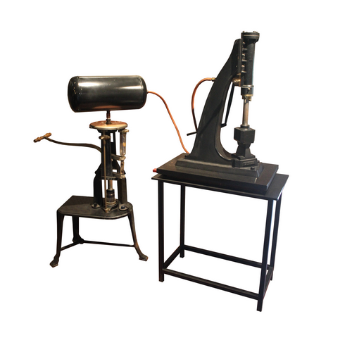
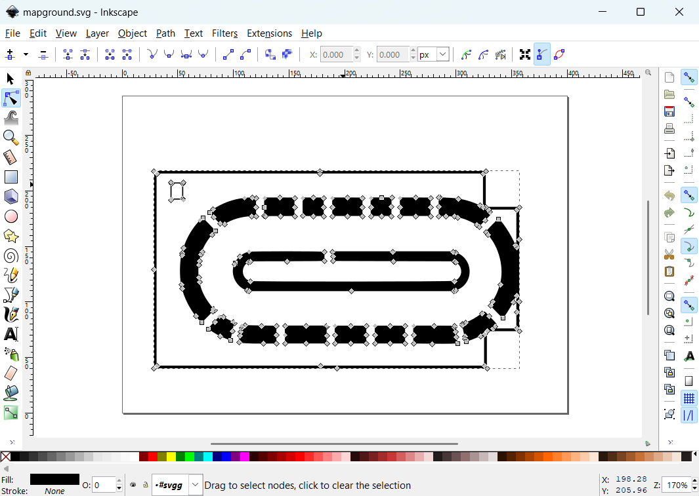

DOCUMENTATION
Introduction
The Museo del Patrimonio Industriale in Bologna offers an interactive experience that enhances visitors' understanding of industrial heritage. This project provides a digital framework for exploring the museum's 15 significant artifacts, organized into chronological, geographical, and thematic paths. By integrating a metadata layer and geo-referencing, the platform connects artifacts to their historical and spatial contexts, creating an immersive exploration of industrial history.
The website is designed as an interactive tool that helps visitors plan their visit from home and enhances their experience inside the museum. The digital companion allows users to explore industrial heritage through interactive maps, timelines, and curated content that contextualizes each artifact within broader historical and cultural narratives. By leveraging geo-referenced content and structured pathways, the platform encourages deeper engagement with the collection, transforming the visit into a dynamic and personalized journey.
We selected the Museo del Patrimonio Industriale for this project due to its crucial role in preserving and showcasing Bologna’s industrial history. The museum highlights the city's technological advancements, economic transformations, and evolution of production techniques, making it a key institution for understanding the region’s industrial heritage. Its extensive collection provides valuable insights into machinery, labor practices, and historical innovations, making it an ideal choice for a digital humanities approach to cultural heritage.Website architecture
Navbar

The website's navigation bar provides structured access to key sections, ensuring an intuitive user experience. The primary navigation links include "Home", "The Items", "The Gallery", "The Museum" and "Documentation." "The Items" section branches into three exploration paths — Chronological, Geographical, and Thematic — allowing users to engage with the collection in different ways. Thematic paths further divide into specialized themes such as "La Dolce Vita Italiana", "Brick by Boring Brick", "The Machine’s World" and "The Silk Path." The gallery serves as an interactive space connected to both the museum and categorized items, enhancing accessibility and contextual understanding.
Homepage
- Title and Subtitle
The homepage prominently displays the website’s title and subtitle, introducing users to the theme of industrial heritage. This section provides a concise overview of the site's purpose and its connection to the Museo del Patrimonio Industriale.
- User Experience Choice
The website offers a tailored experience based on the visitor’s background knowledge. Users can select different levels of interaction, ensuring accessibility for both casual visitors and those with a deeper understanding of industrial heritage. The three available text options — Beginner, Casual and Expert — adapt in length, the use of specialized terminology, and the depth of explanation to provide a personalized and engaging experience for each visitor.
- Path Choice
Visitors can explore the museum's collection through three structured paths: chronological, geographical, and thematic. This feature allows for flexible navigation based on personal interest and preferred method of discovery.
The thematic path is further divided into four specific sub-paths: "Brick by Boring Brick", which focuses on machines and artifacts related to brick-making and construction tools; "La Dolce Vita Italiana", which highlights machinery related to food production and packaging; "The Silk Path", which explores looms and fabric-related artifacts; and "The Machine’s World", which includes a broader selection of industrial machinery. Each of these paths presents a curated selection of items from the entire website collection. - Explore the Museum
This section provides direct access to detailed information about the Museo del Patrimonio Industriale, including its history and significance in the context of Bologna’s industrial past. It features an interactive map of the museum, allowing visitors to see where specific items are located, view images, and seamlessly navigate to the gallery for further exploration.
- Explore the Gallery
The gallery serves as a central space where all items in the collection are displayed with basic metadata. It provides multiple images of each artifact, allowing visitors to examine them in greater detail. However, the in-depth explanations and contextualization of the items are found within the four thematic paths, which offer a more structured exploration of industrial heritage.
- Footer
The footer includes copyright information and additional links, ensuring compliance with content ownership regulations while providing information and contacts about the team members.
- Title and Subtitle
Content
The table below presents the items available on the website along with basic metadata. These items have been organized into the following paths: Chronological Path, Geographical Path, Thematical Path (Brick by Boring Brick, The Silk Road, La Dolce Vita Italiana, The Machines' World), as well as Museum and Gallery.
Item Image Item Name Year of Creation Author Place of Creation Narrative Path 
Terracotta Mold 1920 Società laterizi Imola Bologna Brick by boring brick 
Melted Brick 1922 Società laterizi Imola Bologna Brick by boring brick Hoffmann Klin 1887 Friedrich Hoffmann Bologna Brick by boring brick 
Gelato Machine 1956 Carpigiani Bologna La dolce vita italiana 
Tortellini Machine 1950 Zamboni Bologna La dolce vita italiana 
Easter Egg Packing Machine 1966 Fima Bologna La dolce vita italiana 
Brodo Packing Machine 1959 Natalino Corazza Bologna La dolce vita italiana 
Silk Loom 1980 - Bologna The Silk road 
Silk Mill 1986 Roberto Curti Bologna The Silk road 
Silk XX cent - Bologna The Silk road 
Water Turbine 1906 Calzoni Company Bologna The Machine's world  Steam Trip Hammer 1868 Sebastian Zavaglia Paris The Machine's world 
Shaping Machine - Stussi and Zweifel Milan The Machine's world 
Gear Cutter Machine 1896 Quinto Cassoli Bologna The Machine's world 
Aldini Steam Machine 1823 Carlo Gridel Milan The Machine's world Chronological Path: In this path, items are organized according to their production period, allowing for a historical perspective on their development. By leveraging metadata from the original museum, we have mapped each item to its respective time frame. This approach observes the progression of Bologna’s industrial production from the 18th to the 21st century, although the replicas created by the Aldini Valeriani Institute reproduce industrial machines from the 14th century.
Geographical Path: In this path, items are presented based on their spatial distribution according to the location of their factories. Using metadata obtained from the original museum, we identified the locations of these factories during the production period of each item. This approach provides valuable insights into the industrial landscape of Bologna, particularly from the 18th to the 21st century.
Thematical Path: These paths organize items based on their correlation, whether as stages of the same production sector or as parts of the technical development of a specific era. The groups created are: Brick by Boring Brick – 3 items related to the industrial production of terracotta and ceramics
The Silk Road – 3 items related to the industrial production of silk
La Dolce Vita Italiana – 4 items related to the industry for the Italian way of life and consumption
The Machines' World – 5 items related to Bolognese inventors or machines built in BolognaThe Museum: This page presents the spatial distribution of the items within the Museum of Industrial Heritage, suggesting a visitor route similar to the thematic paths. This approach creates a coherent sequence for exploring the museum, enhancing the visitor experience. The Gallery: This page features additional images of the displayed items, providing detailed photographs for a closer look at their features.
Design
Graphics
Typography
A contemporary sans-serif font, Cooper Hewitt, is used for readability on all pages except the thematic ones. Headings, such as those on the home page and regular pages, use a -webkit-text-stroke effect, making the text transparent with a white border. This transparent background approach not only embodies a modern aesthetic but also aligns with the use of images with transparency.
The fonts in regular pages have relative font sizes, scaling from the largest heading—the website name on the home page at 16vw—to regular page headings at 12vw, subtitles at 9vw, body text at 3vw, and notes at 2.2 vw. Line height is adjusted for readability, sometimes bold to improve contrast on gray.Thematic paths fonts
For the thematic path Brick by Boring Brick, the free for personal use font BD Renaissance.ttf was chosen. Its appearance, transiting elements of medieval illuminated manuscripts and Renaissance typography, complements the decorative imagery. This choice helps immerse the reader in the aesthetic tradition of Bolognese terracotta, from the 15th century to the architectural decisions of the 19th and 20th centuries. This design choice also serves as a visual break from the regular pages, emphasizing that Bologna's industrial heritage spans centuries to nowadays.
The typography for the La Dolce Vita Italiana thematic path was carefully chosen to reflect the elegance, vibrancy, and cultural richness of Italy’s mid-20th-century industrial and culinary heritage. Every font and design choice was made to support the theme of blending tradition with innovation.
The title "La Dolce Vita Italiana” and the carousel item titles (like "Gelato Machine") use Italianno, a cursive font inspired by Renaissance calligraphy. Its flowing, handwritten style captures the artistry of Italian craftsmanship and the romantic feel of La Dolce Vita (The Sweet Life), a cultural idea tied to Italy’s post-war era. The decorative strokes also resemble the elegant designs of food packaging from the 1950s and 1960s, reinforcing the theme’s connection to Italian identity.
For the body text, carousel descriptions, and metadata tables, we used Alegreya, a serif font that’s easy to read. Alegreya combines classic serif shapes with modern clarity, symbolizing the mix of traditional culinary practices and industrial innovation. Its balanced design makes it readable for all users, whether they’re beginners, casual readers, or experts.
Headings in the informational tables (like "INFORMATION”) use Playfair Display, a serif font with bold, high-contrast strokes. This gives the technical details a sense of authority and precision, matching the theme of machinery while keeping the overall design cohesive. The introduction title is set at `70px` for desktop and `30px` for mobile, making it a bold centerpiece that draws attention to the cultural story. Body text is sized at `1.25vw` for desktop and `15px` for mobile, ensuring it scales well across devices and stays easy to read. Carousel descriptions are fixed at `17px`, keeping them consistent for all users, while the content itself adapts to different expertise levels (Beginner, Casual, Expert).The font choices for the Silk Road thematic path are carefully selected to reflect the elegance, craftsmanship, and historical depth associated with the subject. We use Lora, a serif typeface, for the body and introduction, as its classic yet modern aesthetic evokes the refined artistry of silk production while ensuring readability. The introduction text, with its serif style, centered alignment, and generous spacing, enhances the immersive experience, mirroring the meticulous detail of woven textiles. This typographic approach harmonizes with the Silk Road’s narrative, blending tradition with contemporary digital design.
Color Palette
The website employs a minimalist color palette of black, white, and shades of gray, complemented by an accent color—orange—on select pages.This design decision is rooted in both aesthetic and functional considerations.
The primary use of black and white, along with subtle shades of gray, ensures high contrast, which enhances accessibility and readability. The stark contrast between black and white is softened by the gray tones, helping to mitigate potential visual fatigue that can arise from excessive contrast.Color codes: #000000 (Black), #FFFFFF (White), #CD5909 (Orange) The black-and-white palette carries a deeper thematic significance, echoing the visual language of industrialization as depicted in the works of artists like Charles Sheeler. Sheeler's art often portrayed industrialization as a force that stripped away vibrant colors, reducing the world to pale grays—a metaphor for environmental and cultural impact.
Criss-Crossed Conveyors, River Rouge Plant, Ford Motor Company, Charles Sheeler,1927 Ruhr Museum auf Zollverein World Heritage Site The UNESCO World Heritage Site Zollverein in Germany, an industrial landmark, utilizes black, white, and orange as aesthetic choices in its museum. This connection reinforces the website's thematic alignment with industrialization storytelling and its historical and cultural implications.
The introduction of orange as an accent color on specific pages (excluding thematic ones) serves multiple purposes. Orange, reminiscent of rust, evokes a sense of industrial decay and transformation. It also provides a visual break from the monochromatic scheme, adding dynamism and focus to key elements without overwhelming the overall minimalist aesthetic.
On the other hand, the thematic pages present a completely different approach to the site, giving the impression of entering a separate website. This abrupt alternation was intended both to break the tension and density of the predominantly black pages and to offer a new perspective on industrialization: one that is colorful and vibrant, as reflected in the items presented. In these pages, there is also a duality of two tones, alternating between vivid and pastel colors.
To establish a connection between such distinct sections, we added a color transition effect on the Home page images that redirect to the thematic pages, creating a visual link that prepares the user for the shift in atmosphere. Additionally, in the thematic pages, the theme-switching section and the footer maintain the overall style of the website, ensuring a cohesive identity and a seamless experience despite the variation in styles. This strategy not only balances the visual density of the site but also reinforces the narrative that industrialization can be interpreted in multiple ways, whether through the austerity of black and white or the vitality of color.Transition effect when hover, indicating the thematic colors. The color palette was thoughtfully designed for each theme, ensuring a cohesive and meaningful visual narrative. In Brick by Boring Brick, the combination of beige (#FCF5E9), brown (#531F00), and the orange tones from the images forms a trio of colors that evokes terracotta and earth, grounding the theme into a medieval and baroque aesthetic.
For The Silk Road, Soft Ivory (#FAF3E0) was chosen as a background color because it represents silk's natural tones and provides a neutral, elegant backdrop. Deep Burgundy (#6D1B3F) was selected as the main theme color inspired by luxurious silk dyes, which conveys richness and history. This hue, paired with the accompanying images, creates a classic aesthetic that reflects the richness of the theme.
In The Machines World, the fuchsia pink brings the atmosphere and tones of Paris at the turn of the 19th century, evoking the World Fairs where the Belle Époque and Art Nouveau styles were prominently displayed in the aesthetics of the mechanical inventions presented, most of which were made of cast iron.
For La Dolce Vita Italiana, the warm red and creamy beige palette reflects the vibrancy of Italian life and its culinary heritage, evoking the colors of terracotta, fresh pasta, and sunlit landscapes. The use of black in the typography and structural elements adds a modern, industrial contrast, grounding the design in the theme of machinery and innovation.
Images, Logos and Icons
Images
The images featured on the website come from diverse sources, with most being photographs taken by the group inside the museum. Each item was carefully photographed by the team, and some of these images were also used as website backgrounds.
For the items’ images presentation, Photoshop was used to remove backgrounds and correct visual obstructions, such as no-entry barriers and signage, ensuring a clean and focused presentation. The final images were exported in PNG format with transparency, allowing integration across different website sections.
Image before and after editing 
In addition to original photographs, some images used to illustrate or decorate thematic pages were sourced from free image repositories on the internet. The images used as paths on the main page were also gathered from online sources, then edited and placed within white circles, reflecting our design choice.


Some background images, such as those featured in the gallery and museum sections, were obtained from the museum's official website. Additionally, the museum map was created as a vector graphic, based on a map provided on the museum’s website
Map creation on Inkscape. Logos
The logo was designed to visually represent the essence of the project, which explores Bologna's industrial heritage. It combines two key elements: gears and an hourglass. The gears symbolize industry, machinery, and progress, while the hourglass signifies the passage of time, reflecting the historical evolution of Bologna’s industrial activities.
The design follows the golden rectangle principle, ensuring a balanced and aesthetically pleasing composition. Symmetry was carefully applied to maintain harmony between the industrial and historical themes.
To ensure both precision and versatility, the logo was created as a vector SVG image using Inkscape, allowing it to be scaled for various applications without losing quality. The logo was exported in PNG format with transparency, enhancing its adaptability across different mediums while preserving its impact and readability.
Two versions of the logo are used:
A regular version for use on light backgrounds. An inverted version for use on dark backgrounds. This approach ensures that the logo remains effective across different contrasting backgrounds.
Icons
The icons were designed to maintain visual consistency with the path images by incorporating circular elements throughout. Each icon was created in vector SVG format and then exported in PNG format with transparency for integration into different backgrounds. To align with the project's design language, the icons were customized for each color palette used. Additionally, to enhance user interaction and visibility, each icon has a corresponding inverted version.
User experience
The website’s interactive elements have been designed to ensure seamless navigation and engagement. Buttons and other interactive components are styled consistently, with navigation buttons (previous, next) featuring a uniform color scheme and hover effects. To enhance usability, forms and input fields have been given clear borders and distinct focus states.
Text display and readability have been optimized through the implementation of adaptable text choices. Users can toggle between different levels of detail to suit their background knowledge, ensuring an accessible and engaging experience. Font sizes, weights, and spacing have been carefully adjusted to maintain legibility across various screen sizes and user preferences.
Responsive design has been implemented to accommodate different screen sizes and devices. Media queries have been used to adjust layouts dynamically, ensuring proper display on both desktop and mobile interfaces. The navigation bar and carousel adapt to different viewports, with elements adjusting in size and placement for an optimized viewing experience. Additionally, images are displayed in a way that balances performance with visual clarity, ensuring a smooth browsing experience for all users.
Workflow
Our workflow began with an initial design phase using Figma and Canva to create the first draft of the website’s structure and visual elements. This allowed us to establish a clear layout and define user interactions before moving on to the implementation phase.
During development, these design concepts were translated into a functional website, ensuring that all features aligned with the project's goals. The evaluation phase followed, where usability, accessibility, and overall user experience were tested, and refinements were made based on feedback.
Contributions were made individually by each team member to different aspects of the project, from design and coding to content creation and testing, allowing for a collaborative and iterative development process.Individual contributions
Ekaterina Krasnova
Gallery & La Dolce Vita Italiana
For my bachelor’s degree, I studied Linguistic and Translation Studies, which sparked my interest in how language and culture intersect with technology. This passion led me to focus on designing and developing the La Dolce Vita Italiana thematic page, where I aimed to capture the essence of Italy’s mid-20th-century industrial and culinary heritage through deliberate typographic and visual choices. I also created the Gallery page, ensuring a cohesive and interactive presentation of the museum’s artifacts. These tasks allowed me to explore the balance between aesthetic design and functional accessibility, which I found to be the most rewarding part of the project.Anna Nicoletti
Chronological path & The Silk Road
My background is in Languages and Literature and my contribution to the industrial museum website was deeply rooted in shaping its content and thematic structure to enhance the cultural and historical value of the items, making the website both an immersive and informative experience. I worked on the timeline section, organizing the artifacts in a clear chronological sequence to help users trace the evolution of industrial advancements. Additionally, I contributed to the Silk Road thematic page, a section that I found particularly captivating. Exploring the rich heritage of silk production and its impact on trade and craftsmanship allowed me to present the narrative in an engaging and meaningful way.Rubens Baraldi
Geographical path & Brick by Boring Brick
Nadia Calvisi
The Museum & The Machines World
Credits
-
Cooper Hewitt
Copyright: 2014, Cooper Hewitt Smithsonian Design Museum (cooperhewitt.org)
License: SIL Open Font License, Version 1.1. -
Alegreya
Copyright: 2011, Juan Pablo del Peral (juan@huertatipografica.com.ar)
License: SIL Open Font License, Version 1.1. -
Boecklins Universe
Copyright: 2013 Peter Wiegel.
License: SIL Open Font License, Version 1.1. -
Italianno
Copyright: 2011 TypeSETit, LLC (typesetit@att.net)
License: SIL Open Font License, Version 1.1. -
Raleway
Copyright: Rodrigo Fuenzalida (www.rfuenzalida.com | hello@rfuenzalida.com)
License: SIL Open Font License, Version 1.1. -
Playfair Display
Copyright: 2010-2012 by Claus Eggers Sørensen (es@forthehearts.net)
License: SIL Open Font License, Version 1.1. -
Spectral SC
Copyright:2017 The Spectral Project Authors (GitHub Link)
License: SIL Open Font License, Version 1.1.
Font Licenses
This website explores typographic and layout styles for museum pages, developed as part of the "Information Modeling and Web Technologies" course in the Master’s Degree in Digital Humanities and Digital Knowledge at the University of Bologna, supervised by Prof. Fabio Vitali.
The Museo del Patrimonio Industriale’s collection is used under fair academic practice. All content rights remain with the original institutions. All typographic, layout, and design choices are © 2025 Anna Nicoletti, Ekaterina Krasnova, Nadia Calvisi, Rubens Fernandes Junior.All fonts used in this project are licensed under the SIL Open Font License (OFL), which allows for free use, modification, and distribution, provided the license terms are followed. This ensures that the fonts can be used in both personal and commercial projects without legal restrictions, as long as the license is respected.
For more details on the SIL Open Font License, visit scripts.sil.org. Here's a list of the fonts utilized.-